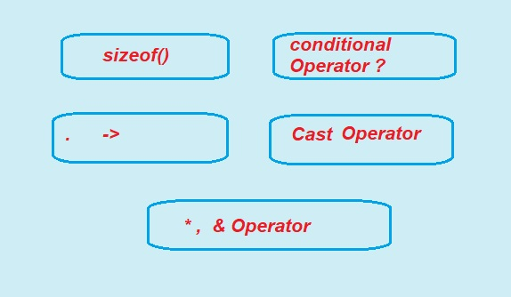
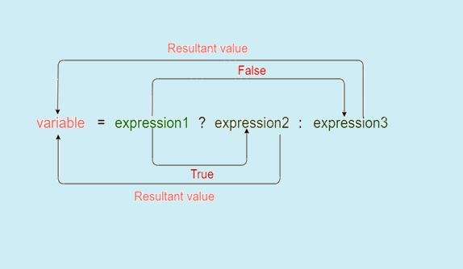

1. sizeof() Operator:
Bitwise AND operator is denoted by the single ampersand sign (&). Two integer operands are written on both sides of the (&) operator. If the corresponding bits of both the operands are 1, then the output of the bitwise AND operation is 1; otherwise, the output would be 0.
Truth table for bitwise operators
sizeof operator is widely and much used in the C programming language. This operator can be used to compute the size of operand or variable.
When we use the sizeof operator whose result is the unsigned integral type which is usually denoted by size_t.
it simply returns the amount of memory allocated to that data types.
This operator can be applied to any data type, including primitive types such as integer and floating-point types, pointer types, or compound datatypes such as Structure, union, etc.
Syntax:
sizeof(Expression);
where ‘Expression‘ can be a data type or a variable of any type.
It returns the size of the given expression.
?,&,*,sizeof Operators in C Language
In this article, we are discussing some special operators in C Language. Here, we will discuss all types of operators what we have not learned in previous tutorials
In C programming are the special type of operators are generally used to perform operation on the data .
C language use following some Other Types of operators:
1. sizeof(): Operator.
2. Conditional Operator ?:
3. dot (.) and arrow (->) Operators.
4. Cast Operator
5. &,* Operator
C Program To demonstrate working of sizeof operator
/* C Program To demonstrate
sizeof operator * /
#include <stdio.h>
int main()
{
printf("%lu\n", sizeof(char));
printf("%lu\n", sizeof(int));
printf("%lu\n", sizeof(float));
printf("%lu", sizeof(double));
return 0;
}
Output:
1
4
4
8
Note: sizeof() operator may give different output according to machine architecture. The size varies according to system architecture 32-bit or 64 we have run our programme on a 32-bit gcc compiler.

| sizeof() | sizeif() Operator in C Programming mainly use for Giving the total amount of storage required for storing any object in the form of operand. |
|---|---|
| Conditional Operator(?:) or ternary Operator |
Conditional Operator in C is similar to the if else staement as it work same as if-else statement . It is also known as ternary opearator as it work on three operands. |
| The Dot(.) operator | The Dot(.) operator is used to normally access members of a structure or union. |
| Arrow(->) operator | The Arrow(->) operator used to access the members of the structure or the unions using pointers. |
| & Operator | & is known as address of operator and It is used to get the address of the given variable. |
| * Operator | The pointer operator * in c programming is a pointer to a variable. * gives the value at the address of a operand. And known dereferencing or indirection operator |
2. Conditional Operator ?:
What is the conditional operator?
In C Programming The conditional operator (? :) is also known as a ternary operator (it takes three operands).
The conditional operator works similar to the 'if-else' statement as 'if-else' statement is also a decision-making statement.
The conditional operator is the decision-making statements which depends upon the output of the expression. It is represented by two symbols, i.e., '?' and ':'.
In other words, the conditional operator or ternary operator first evaluates an expression for a true or false value and then executes one of the two given statements depending upon the result of the evaluation.
Syntax of a conditional operator
Exp1? exp2: exp3;
The conditional operator is of the form Exp1? Exp2: Exp3
Here, Exp1 is the condition to be evaluated.
If the condition(Exp1) is True then it will execute and return the result of Exp2 otherwise if the condition(Exp1) is false then it will execute and return the result of Exp3.
?: Operator Working:
Diagram shows syntax how conditional or ternary(?:) Operator works.
In the syntax, the expression1 is a Boolean condition that can be either evaluate true or false value.
After execution if If the expression1 results into a true value, then the expression2 will execute. And then The expression2 is said to be true only when it returns a non-zero value.
If the expression1 returns false value then the expression3 will execute. At last The expression3 is said to be false only when it returns zero value.
The pictorial represention.

C Program to show working ternary or conditional operator to check if the number is odd or even.
#include <stdio.h>
int main()
{
int n; /*variable declaration */
printf("Enter any number");
scanf("%d",&n); /* taking user input for n variable*/
(n%2==0)? (printf("Number is Even")) : (printf("Number is Odd")); /* conditional operator*/
return 0;
}
Output:
Enter any number
6
Number is even
In the above code, we are taking input n as any number from the user to check whether it is even or odd. After taking input, we have applied the condition by using a conditional operator. In this condition, we are checking the given number n. If the number i.e n is successfully divides by 2 and remainder is zero , then the statement1 will execute, i.e., (printf("Number is Even")) otherwise, statement2 will execute, i.e., (printf("Number is Odd")).
3. dot (.) and arrow (->) Operators
These operators also known as member operators are used to refer individual members of structure and union. The dot operator is applied to the actual variable of structure or union. An Arrow operator in C allows to access elements in Structures and Unions.
The arrow operator is used with a pointer to a variable structure or union.
The arrow operator is formed by using a minus sign, followed by the greater than symbol as shown below.
Syntax:
(pointer_name)->(variable_name)
The -> operator in C gives the value held by variable_name to structure or union variable pointer_name.
The Arrow(->) operator used to access the members of the structure or the unions using pointers
The Dot(.) operator is used to normally access members of a structure or union.
C Program to show working of dot . operator
/* C program to show dot . operatorused in structure */
#include <stdio.h>
#include <stdlib.h>
/* Creating the structure*/
struct employee
{
char name[80];
int age;
float salary;
};
int main()
{
/* Creating the structure object */
struct employee emp;
/* Assigning memory to struct variable emp*/
strcpy(emp.name,”Ajay”);
emp.age = 21;
/* Printing the assigned value to the variable */
printf("%d", emp.age);
return 0;
}
Output:
21
C program to show Arrow operator
/* C program to show Arrow operator
used in structure */
#include <stdio.h>
#include <stdlib.h>
// Creating the union
union employee
{
char name[80];
int age;
float salary;
};
// Creating the union object
union employee* emp = NULL;
// Main Program code
int main()
{
/* Assigning memory to struct variable emp */
emp = (union employee*)
malloc(sizeof(union employee));
/* Assigning value to age variable
of emp using arrow operator */
emp->age = 18;
/* DIsplaying the assigned value to the variable */
printf("%d", emp->age);
}
Output:
18
4. Type Cast Operator
Converting one datatype into another is known as type casting or, type-conversion.
A cast is a special operator that forces one data type to be converted into another.
Casting operators convert one data type to another.
For example, if you want to store a 'long' value into a simple integer then you can type cast 'long' to 'int'. You can convert the values from one type to another explicitly using the cast operator as follows −
(type_name) expression
Example the type cast operator In C Programming
#include <stdio.h>
main()
{
int x= 17, y = 5;
double avg;
avg= (double) x / y;
printf("The Result of %d / %d= : %f\n",x,y,avg );
}
Output:
The Result of 17 / 5= 3.400000
When the above code is compiled and executed, it produces the following result −
Value of avg : 3.400000
The cast operator has precedence over division, so the value of avg is first converted to type double and finally it gets divided by y produce a double value.
It is considered good programming practice to use the cast operator whenever type conversions are necessary.
Type conversions in C programming can be implicit which is performed by the compiler automatically,
or it can be specified explicitly done by programmer through the use of the cast operator.
5. &,* Operator
In C Programming There are two types of pointer operators. They are
1. Address operator(&)
2. Indirection operator(*)
& is known as address of operator and It is used to get the address of the given variable.
For example &a; will give the actual address of the variable.
The pointer operator * in c programming is a pointer to a variable. * gives the value at the address of a operand. And known dereferencing or indirection operator
For example *age will pointer to a variable age.
C program on &,* pointer operators
#include <stdio.h>
int main()
{
int p = 100, q, *ptr;
ptr = &p; // referencing (&a)
q = *ptr; // dereferencing (*ptr)
printf("Value of &p is 0x%x\n", &p);
printf("Value of ptr is 0x%x\n", ptr);
printf("Value of q is %d\n", q);
printf("Value of b is %d\n", b);
printf("Value of *ptr is %d\n", *ptr);
return 0;
}
Output:
Value of &p is 0xbfb1715c
Value of ptr is 0xbfb175c
Value of p is 100
Value of q is 100
Value of *ptr is 100
Previous Topic:-->> Bitwise Operators || Next topic:-->>Decision Making in C